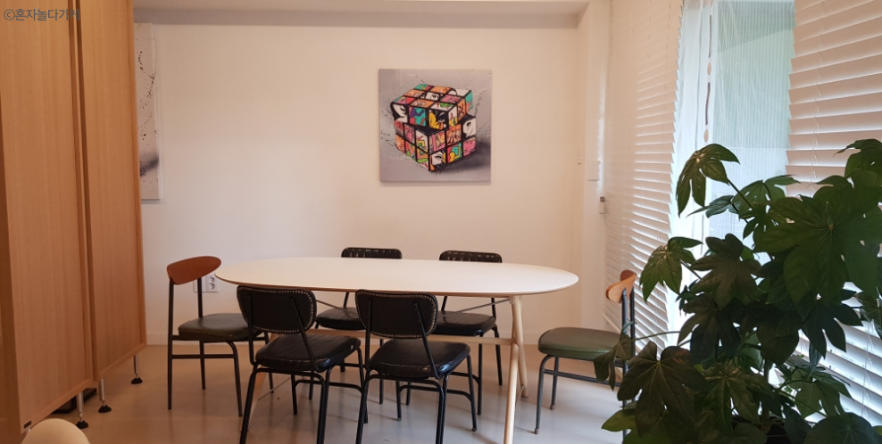

마피아 게임. 종종 마피아 게임 관련 프로그램을 보거나 ‘마피아’, ‘경찰’,
‘의사’ 등 마피아 관련 단어를 보면 마피아 게임을 하던 학창 시절이
그리워진다. 아무 생각 없이 그 역할에 몰입하여 각자 셜록에 빙의해 열심히
추리하던 시절.
나는 마피아 게임을 너무너무 좋아한다. 고등학생
때 친해진 친구 중에는 만나면 무조건 마피아 게임을 하는 무리도 있을 정도.
다양한 직업을 넣고 제대로 된 마피아 게임을 즐기기 위해서는 적어도 7명이
필요하다. 하지만 성인이 된 이후 모두 다른 길을 가게 돼 옛 친구들의 얼굴
보기란 정말 힘들어졌다. 4명 모이기도 힘든데, 마피아 게임을 할 만한
기회는 좀처럼 오지 않는다.
이렇게... 마피아 게임을 즐기고
싶지만, 여러 외부 요인으로 마피아 게임을 즐기지 못하는 사람들을 위한
공간, 프로그램이 있다. 이번 글에서는 마피아 게임 진심러들을 위한
‘혼자서도 즐길 수 있는 마피아 게임 프로그램’을 소개해보고자 한다.
심심할
때, 마피아 게임이 그리울 때, 새로운 사람을 만나고 싶을 때, 가볍고
건전하게 놀고 싶을 때 가기 딱 좋은 곳들이다.
‘혼자놀다가게’는 가게 이름부터가 혼자 놀러 가고 싶게 만든다. 이 가게의
메인 슬로건은 ‘혼자와도 혼자 놀 일 없는, 혼자놀다가게’이다. 혼자 노는 곳
보다는 혼자 놀러 가서 혼자 온 여러 사람과 함께 노는 곳에 가깝다.
혼자놀다가게는 성인들을 위한 놀이 공간으로 가벼운 보드게임, 머리를 쓰는
전략 보드게임 등 건전한 놀이문화를 지향한다.
보드게임을 하고 싶지만, 마땅히 같이 갈 사람이 없을 때, 혹은 새로운
사람과 보드게임을 하고 싶을 때 가기 좋은 성인용 보드게임 방이다.
혼자놀다가게는 상수역 근처에 자리 잡고 있다.
혼자놀다가게의 매주 금요일은 마피아 데이이다. 마피아 데이는 다양한 마피아류 보드게임만 집중적으로 플레이하는 날이다. 세일럼, 사보타지, 이웃집 몬스터, 노 터치 크라켄, 뱅, 디셉션, 두부왕국, 한밤의 늑대인간, 타뷸라의 늑대, 스파이폴, 삼국지 비밀결사 등 마피아류 보드게임은 없는 것 빼고 전부 있다. 마피아 게임 관련 보드게임 중독자들이 좋아할 만한 곳이다. 적게는 6~7명 많게는 15~20명 정도 모이고 많을 때는 3주 연속 15명 이상 왔다고 한다. 혼자놀다가게라고 해서 꼭 혼자만 와야 하는 곳은 아니다. 1명이든 2명이든 3명이든 함께 와서 새로운 사람들과 마피아 게임을 즐길 수 있는 곳이다. 하지만 신청 인원이 4명 미만인 경우, 이벤트가 취소될 수 있다.
혼자놀다가게 마피아데이는 매주 금요일, 오후 7시 30분부터 11시까지 무려 3시간 30분 동안 진행된다. 퇴근길에 들러 신명나게 자기 추리력을 뽐내며 마피아 게임을 하기에 딱!
이번에 소개할 곳은 ‘피델리오’이다. 피델리오는 마포구에 위치한 소셜
다이닝 공간이다. 낯선 사람들과의 근사한 한 끼를 제공하는 피델리오는 여러
프로그램을 운영 중이다. 모든 것을 잠시 내려놓고 나를 찾아 떠나는
‘나에게로 떠나는 여행’, 삼성화재와 함께 몸과 마음 건강을 되돌아보는
‘휴가와 함께하는 몸과 마음 회복 소셜 다이닝’, ‘내가 내일 죽는다면’이라는
주제로 이야기를 나누는 ‘무브 투 헤븐’ 등 특별한 컨셉 속에서 새로운
사람들과 편견 없는 대화를 할 수 있는 곳이다.
그중에서도 MBTI
MAFIA는 처음 보는 사람들과 멋진 코스요리를 즐기며 식사가 끝날 때까지
자신의 MBTI를 속이고 있는 게스트가 누구인지 찾는 소셜 다이닝이다. 서로의
정체를 속고 맞추는 비밀스러운 파티이다.
현장에서 호스트가
선정한 MBTI 유형이 마피아가 된다. 마피아는 자신의 MBTI를 끝까지 속일
경우 승리한다. 시민은 최종 투표를 통해 마피아를 찾아내면 승리한다.
마피아 게임 덕후, MBTI 덕후들이라면 좋아할 만한 프로그램이다. 마피아
게임 덕후임과 동시에 MBTI 과몰입러라면 맛있는 것도 먹고, 제한 없이
추리할 이 좋은 기회를 놓칠 수 없을 것이다.
프로그램은 다음과 같은 순서로 진행된다. 먼저 마피아 게임을 안내하고
마피아를 선정한다. 다음 1:1 질문 카드 자기소개를 진행한다. 다음으로 자유
토론 이후 1차 투표를 진행한다. 그다음 다시 한번 자유롭게 토론한다.
마지막으로 최종 투표를 통해 마피아와 시민을 가려낸다.
피델리오는 소셜 다이닝의 특성을 극대화할 수 있도록 1인 참석을 원칙으로
하고 있다. 일행과 함께 참석할 경우 새로운 사람과 솔직한 나 자신을
마주한다는 소셜 다이닝의 기본 틀을 헤칠 수 있기 때문에 2인 이상 신청은
비추천한다.
MBTI MAFIA 프로그램 일정은 매달 변경되며
피델리오 공식 사이트(https://fidelio.site/)를 통해 확인할 수 있다.
소고기 토마토 스튜, 당근 퓌레를 곁들인 양송이타파스와 주키니롤, 꿀과
마늘 마요네즈를 곁들인 스페인식 대구 스테이크, 버섯 리가토니, 비리아
타코, 판나코타 등 화려한 음식들과 함께 색다른 마피아 게임을 경험해보자.
‘마피아-진심모드’는 ‘남의집’을 통해 참여할 수 있는 프로그램이다.
남의집은 취향이 맞는 모임을 개최하고, 참여할 수 있는 커뮤니티이다.
가정집, 작업실, 동네 가게 등 새로운 공간에서 새로운 사람들과 취향을
공유할 수 있도록 취향이 맞는 호스트와 게스트를 만나게 해준다. 2022년
5월까지 총 5,630개의 모임이 진행됐으며 총 13,974명의 게스트가 남의집
모임에 놀러 갔다. 남의집에서 모르는 사람 10명과 함께하는 마피아 게임은
어떨까?
‘마피아-진심모드’는 사진, 영상을 제작하는
스튜디오에서 진행한다. ‘진심모드’답게 자기소개 없이 무려 5시간 30분 동안
마피아 게임을 진행하고, 원하는 사람이 있을 경우 새벽 2시까지 마피아 게임
2차전을 즐긴다. 최대 8시간까지 마피아 게임만 하는 것이다.
또한 이곳만의 특별한 직업들이 준비되어 있다. 일반적인 마피아
게임에서 사용되는 직업인 ‘마피아’, ‘의사’, ‘경찰’, ‘시민’ 이외에도
‘살인자’, ‘건달’, ‘간호사’, ‘기자’, ‘군인’, ‘탐정’ 등의 직업이
준비돼있다. 시민은 거의 없고 대부분의 게스트가 각각의 승리 조건과 특수한
능력을 가지기 때문에 소외되는 사람 없이 불타는 추리를 즐길 수 있다.